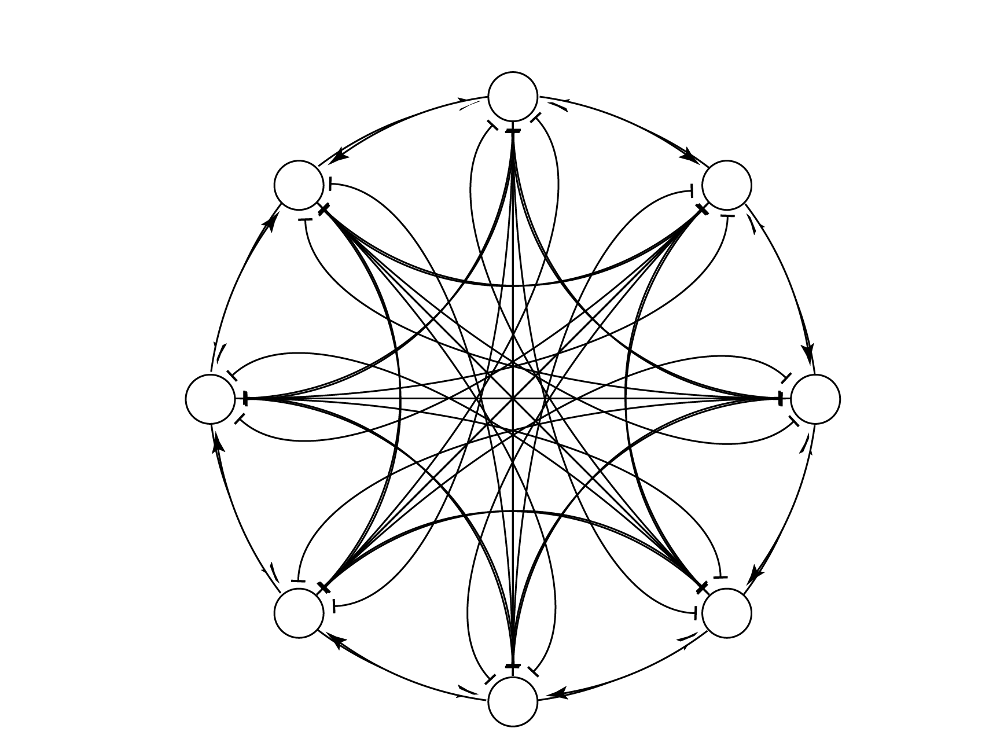

{{ "INTEGRATIVE SENSORY NEUROETHOLOGY" }}
My work takes an integrative approach to sensory neuroethology, combining
electrophysiology, behavior, computational modeling, and the occasional robot
to answer one central question: how do animals transform our noisy world into
the meaningful signals that allow them to survive?
